MultiVariate (Dynamic) Generalized Additive Models


The mvgam 📦 fits Bayesian Dynamic Generalized Additive Models (DGAMs) that can include highly flexible nonlinear predictor effects, latent variables and multivariate time series models. The package does this by relying on functionalities from the impressive brms and mgcv packages. Parameters are estimated using the probabilistic programming language Stan, giving users access to the most advanced Bayesian inference algorithms available. This allows mvgam to fit a very wide range of models, including:
- Multivariate state space time series models
- Continuous time autoregressive time series models
- Dynamic factor models
- Hierarchical N mixture models
- Hierarchical generalized additive models
- Joint species distribution models
Installation
You can install the stable package version from CRAN using: install.packages('mvgam'), or install the latest development version using: devtools::install_github("nicholasjclark/mvgam"). You will also need a working version of Stan installed (along with either rstan and/or cmdstanr). Please refer to installation links for Stan with rstan here, or for Stan with cmdstandr here.

A simple example
We can explore the package’s primary functions using one of its built-in datasets. The portal_data from the Portal Project carries counts of baited captures for four desert rodent species over time (see ?portal_data). Use mvgam_data() to verify that the data layout suits a proposed observation family and to inspect the series before fitting.
data(portal_data)
mvgam_data(portal_data, y = "captures", family = poisson())
#> ✔ Data check passed for family 'poisson (link = log)'.
#> • series: 4 level(s)
#> • time: 1 to 80
#> • n obs: 320 (68 NA)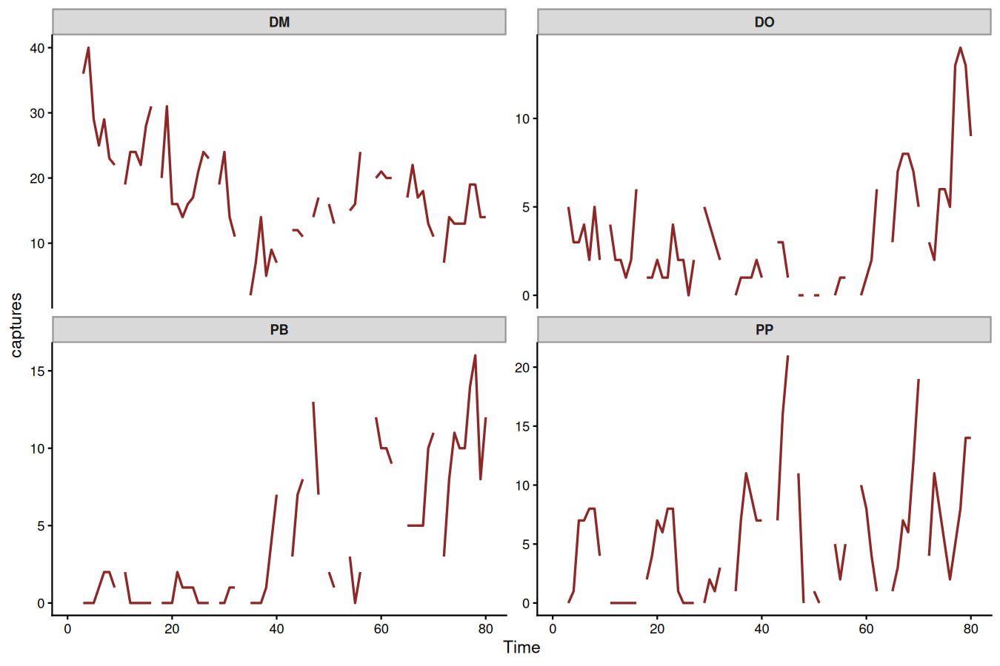
mvgam_data(portal_data, y = "captures", family = poisson(), series = 1L)
#> ✔ Data check passed for family 'poisson (link = log)'.
#> • series: 4 level(s)
#> • time: 1 to 80
#> • n obs: 320 (68 NA)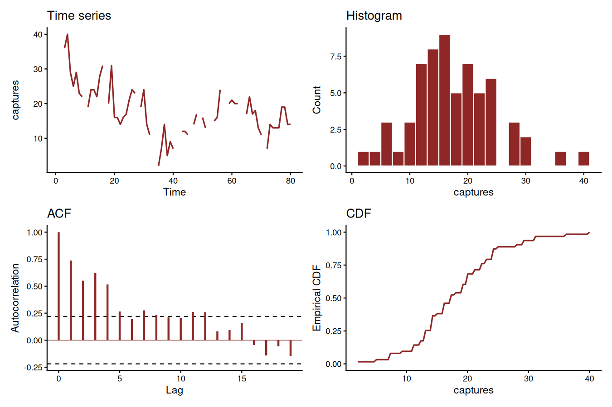
These plots show that the time series are count responses, with missing data, many zeroes, seasonality and temporal autocorrelation all present. These features make time series analysis and forecasting very difficult using conventional software. But mvgam shines in these tasks.
For most forecasting exercises, we’ll want to split the data into training and testing folds:
data_train <- portal_data %>%
dplyr::filter(time <= 60)
data_test <- portal_data %>%
dplyr::filter(time > 60 &
time <= 65)Formulate an mvgam model; this model fits a State-Space GAM in which each species has its own intercept, linear association with ndvi_ma12 and potentially nonlinear association with mintemp. These effects are estimated jointly with a full time series model for the temporal dynamics (in this case a Vector Autoregressive process). We assume the outcome follows a Poisson distribution and will condition the model in Stan using MCMC sampling with Cmdstan:
mod <- mvgam(
# Observation model is empty as we don't have any
# covariates that impact observation error
formula = captures ~ 0,
# Process model contains per-series random intercepts on
# ndvi_ma12 and per-series smooths of mintemp, written
# against `by = lv_axis()` so the smooths live on the
# trend side. Temporal dynamics are modelled with a
# Vector Autoregression (VAR(1)).
trend_formula = ~
s(ndvi_ma12, bs = 're', by = lv_axis()) +
s(mintemp, bs = 'bs', by = lv_axis()) - 1 +
VAR(),
# Observations are conditionally Poisson
family = poisson(),
# Condition on the training data
data = data_train,
backend = 'cmdstanr'
)Using print() returns a quick summary of the object:
mod
#> GAM observation formula:
#> captures ~ 0
#>
#> GAM process formula:
#> ~s(ndvi_ma12, bs = "re", by = series) + s(mintemp, bs = "bs", by = series) - 1
#>
#> Family: poisson
#> Links: mu = log
#>
#>
#> Trend model:
#> VAR(1)
#>
#>
#> N series:
#> 4
#>
#>
#> N timepoints:
#> 60
#>
#>
#> Status:
#> Loading required namespace: rstan
#> Draws: 4 chains, each with iter = 2500; warmup = 1500; thin = 1;
#> total post-warmup draws = 4000Split Rhat and Effective Sample Size diagnostics show good convergence of model estimates
mcmc_plot(mod,
type = 'rhat_hist')
#> `stat_bin()` using `bins = 30`. Pick better value `binwidth`.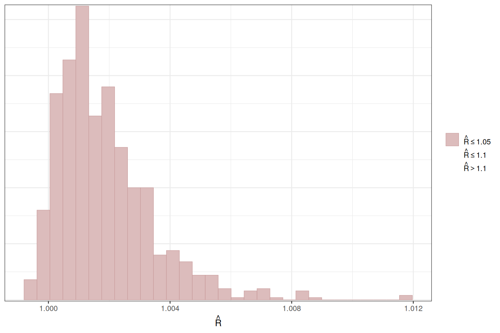
mcmc_plot(mod,
type = 'neff_hist')
#> `stat_bin()` using `bins = 30`. Pick better value `binwidth`.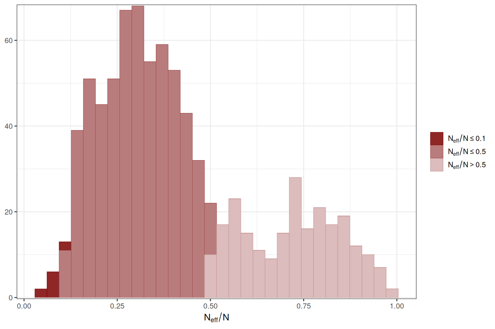
Use conditional_effects() for a quick visualisation of the main terms in model formulae
conditional_effects(mod,
type = 'link')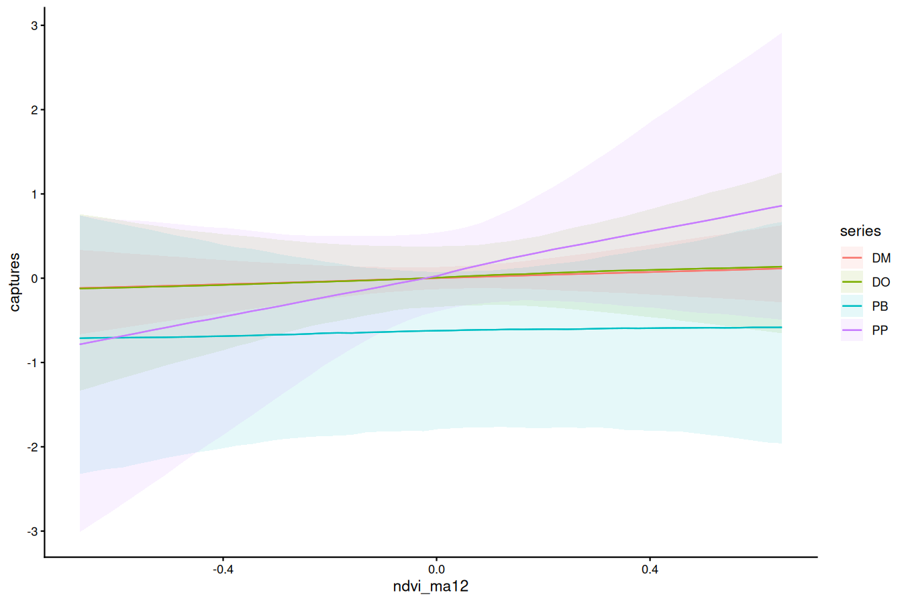
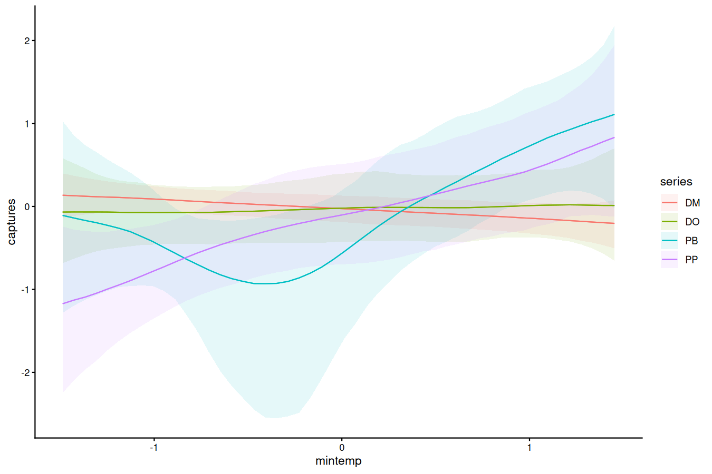
Design more targeted plots using plot_predictions() from the marginaleffects package
plot_predictions(
mod,
condition = c('ndvi_ma12',
'series',
'series'),
type = 'link'
)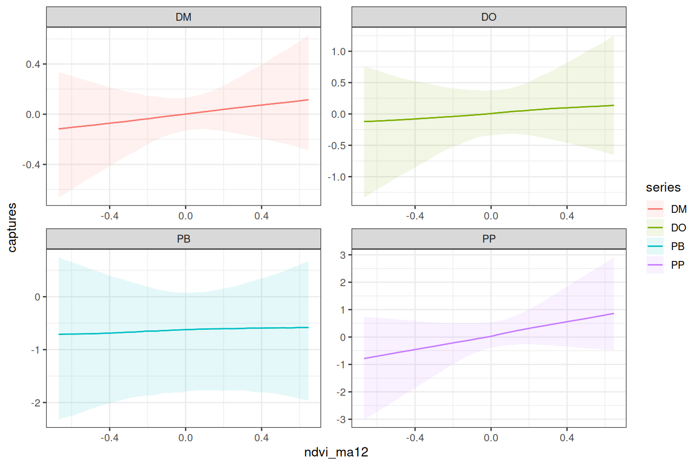
plot_predictions(
mod,
condition = c('mintemp',
'series',
'series'),
type = 'link'
)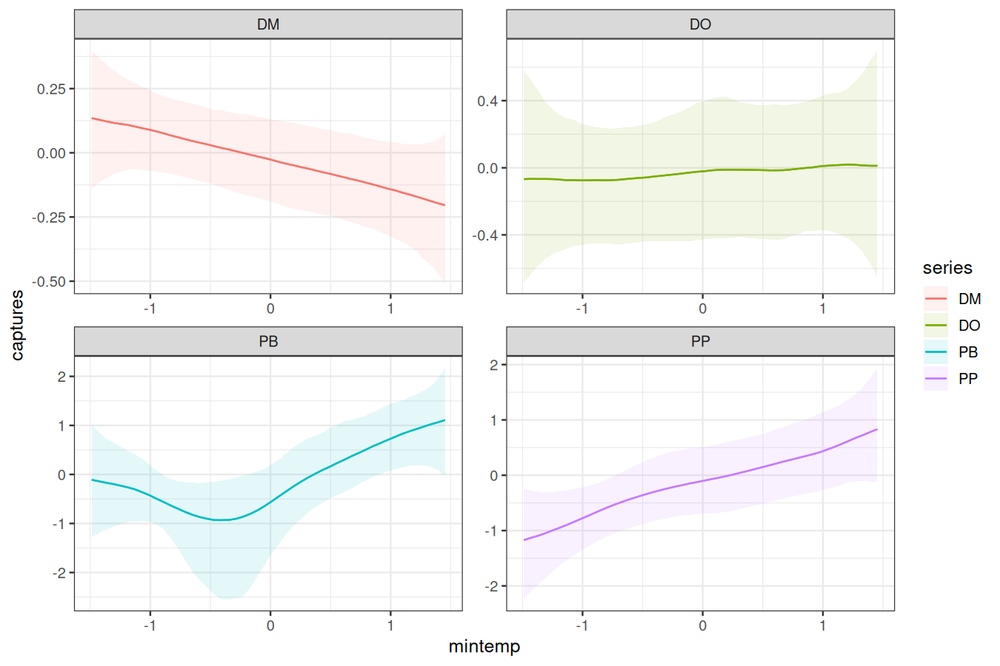
We can also view the model’s posterior predictions for the entire series (testing and training). Forecasts can be scored using a range of proper scoring rules. See ?score.mvgam_forecast for more details
fcs <- forecast(mod,
newdata = data_test)
plot(fcs, series = 1) +
plot(fcs, series = 2) +
plot(fcs, series = 3) +
plot(fcs, series = 4)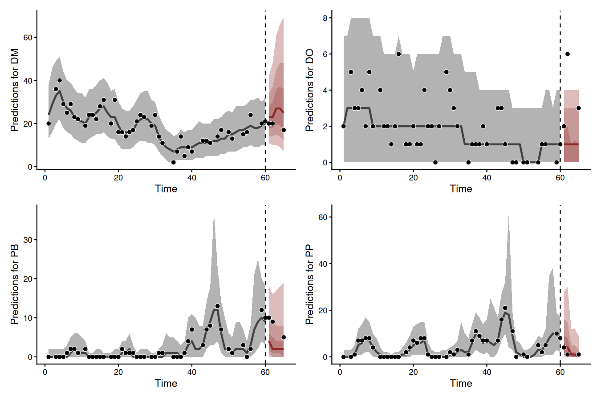
For Vector Autoregressions fit in mvgam, we can inspect impulse response functions and forecast error variance decompositions. irf() runs an Impulse Response Function (IRF) simulation in which a positive “shock” hits a target process at time t = 0. Holding all else stable, it computes how each remaining process in the latent VAR would be expected to respond over the forecast horizon h. It returns the impulse responses for every process in an array that the S3 plot() method draws. Here we use the generalized IRF, which makes no assumption about the order of the series in the VAR process. The plots show how each process is expected to respond to a sudden, positive pulse from the other processes over 12 timepoints.
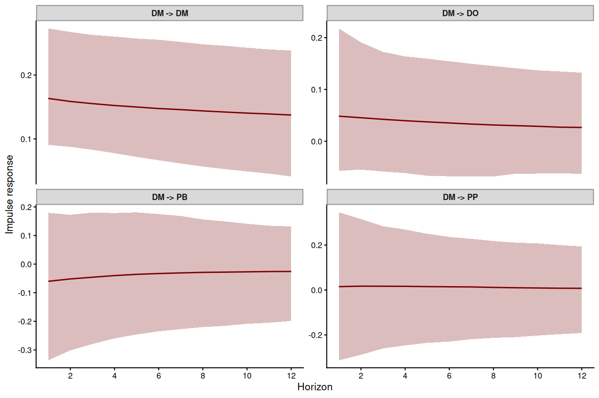
plot(irfs,
series = 3)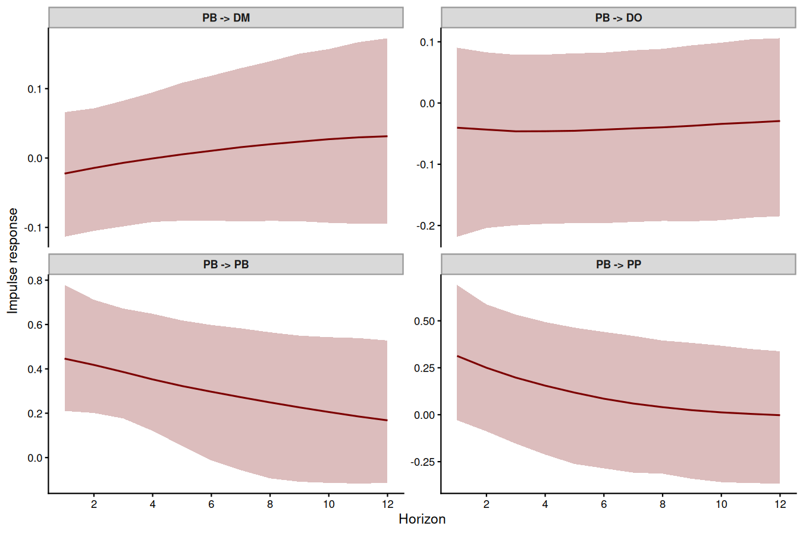
fevd() computes forecast error variance decompositions (FEVDs) for each process. An FEVD measures how orthogonal shocks to every process in the system contribute to the forecast variance of a focal process over increasing horizons. It splits the forecast variance of each latent series into the shares attributable to each series in the VAR process. FEVDs are useful because some shocks cause little short-term variation but larger fluctuations over longer horizons.
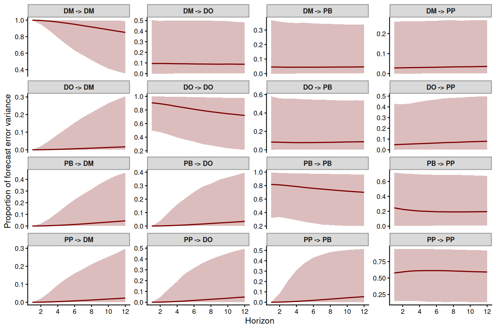
This plot shows that the variance of forecast uncertainty for each process is initially dominated by contributions from that same process (i.e. self-dependent effects) but that effects from other processes become more important over increasing forecast horizons. Given what we saw from the IRF plots above, these long-term contributions from interactions among the processes makes sense.
Plotting randomized quantile residuals over time for each series can give useful information about what might be missing from the model. We can use the highly versatile pp_check() function to plot these:
pp_check(
mod,
type = 'resid_ribbon_grouped',
group = 'series',
x = 'time',
ndraws = 200
)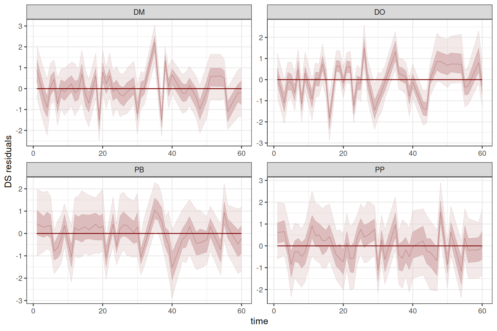
When describing the model, it can be helpful to use the how_to_cite() function to generate a scaffold for describing the model and sampling details in scientific communications
description <- how_to_cite(mod)
description#> Methods text skeleton
#> We used the R package mvgam (version 2.0.0; Clark & Wells, 2023) to
#> construct, fit and interrogate the model. mvgam fits Bayesian
#> state-space models that combine flexible predictor effects in both the
#> process and observation components, building on functionality from the
#> brms (Burkner 2017) and mgcv (Wood 2017) packages. To encourage
#> stability and prevent forecast variance from increasing indefinitely, we
#> enforced stationarity of the Vector Autoregressive process following
#> Heaps (2023) and Clark et al. (2025). The mvgam-constructed model and
#> data were passed to Stan (Carpenter et al. 2017) via the cmdstanr
#> interface (Gabry et al. 2024). We ran 4 Hamiltonian Monte Carlo chains
#> for 1500 warmup iterations and 1000 sampling iterations. Rank-normalised
#> split Rhat and effective sample sizes (Vehtari et al. 2021) were used to
#> monitor convergence.
#>
#> Primary references
#> Clark NJ and Wells K (2023). Dynamic Generalized Additive Models (DGAMs)
#> for forecasting discrete ecological time series. Methods in Ecology and
#> Evolution, 14, 771-784. https://doi.org/10.1111/2041-210X.13974
#> Burkner PC (2017). brms: An R Package for Bayesian Multilevel Models
#> Using Stan. Journal of Statistical Software, 80(1), 1-28.
#> https://doi.org/10.18637/jss.v080.i01
#> Wood SN (2017). Generalized Additive Models: An Introduction with R (2nd
#> edition). Chapman and Hall/CRC.
#> Heaps SE (2023). Enforcing stationarity through the prior in vector
#> autoregressions. Journal of Computational and Graphical Statistics 32,
#> 74-83.
#> Clark NJ, Ernest SKM, Senyondo H, Simonis J, White EP, Yenni GM and
#> Karunarathna KANK (2025). Beyond single-species models: leveraging
#> multispecies forecasts to navigate the dynamics of ecological
#> predictability. PeerJ 13, e18929.
#> Carpenter B, Gelman A, Hoffman MD, Lee D, Goodrich B, Betancourt M,
#> Brubaker M, Guo J, Li P and Riddell A (2017). Stan: A probabilistic
#> programming language. Journal of Statistical Software 76.
#> Gabry J, Cesnovar R, Johnson A and Bronder S (2024). cmdstanr: R
#> Interface to 'CmdStan'. https://mc-stan.org/cmdstanr/
#> Vehtari A, Gelman A, Simpson D, Carpenter B and Burkner P (2021).
#> Rank-normalization, folding, and localization: An improved Rhat for
#> assessing convergence of MCMC. Bayesian Analysis 16(2), 667-718.
#> https://doi.org/10.1214/20-BA1221
#>
#> Other useful references
#> Arel-Bundock V, Greifer N and Heiss A (2024). How to interpret
#> statistical models using marginaleffects for R and Python. Journal of
#> Statistical Software, 111(9), 1-32.
#> https://doi.org/10.18637/jss.v111.i09
#> Gabry J, Simpson D, Vehtari A, Betancourt M and Gelman A (2019).
#> Visualization in Bayesian workflow. Journal of the Royal Statistical
#> Society A, 182, 389-402. https://doi.org/10.1111/rssa.12378
#> Vehtari A, Gelman A and Gabry J (2017). Practical Bayesian model
#> evaluation using leave-one-out cross-validation and WAIC. Statistics and
#> Computing, 27, 1413-1432. https://doi.org/10.1007/s11222-016-9696-4
#> Burkner PC, Gabry J and Vehtari A (2020). Approximate leave-future-out
#> cross-validation for Bayesian time series models. Journal of Statistical
#> Computation and Simulation, 90(14), 2499-2523.
#> https://doi.org/10.1080/00949655.2020.1783262methods_md() writes the same model as Markdown equations, with a glossary of every symbol and the priors, for a methods section or an appendix
methods_md(mod)The methods shown above are a small selection. For a full list of methods for fitted model objects, type methods(class = "mvgam").
Extended observation families
mvgam began as a tool for forecasting ecological counts. Its most specialised families still model counts. Successive releases have widened the observation families it accepts. The choice of family now spans most of the response types met in ecological and environmental monitoring.
For continuous responses:
-
gaussian()for real-valued data -
student()for real-valued data with heavy tails -
lognormal()andGamma()for strictly positive data -
exponential()for waiting times -
Beta()for proportions on(0, 1) -
tweedie()for positive continuous data carrying an exact mass at zero, such as catch per unit effort or rainfall
For counts and binary outcomes:
-
poisson()for equidispersed counts -
negbinomial()for overdispersed counts -
beta_nb()for counts whose tails run heavier than a negative binomial can reach -
bernoulli()for binary data -
binomial()andbeta_binomial()for counts with a known number of trials -
com_binomial()for bounded counts that are under-, over- or super-dispersed relative to a binomial
A further group of families operates on closure units, where several rows of the data share a single latent state. Because mvgam groups the rows of a unit by their series and time values, replicate visits to a site or the species of one assemblage need no reshaping:
-
nmix()for repeat counts of an unknown abundance seen with imperfect detection -
occ()for repeat detection and non-detection visits to a site of unknown occupancy -
multi()anddiri()for compositional counts and proportions that sum within a unit -
categ()for a single categorical outcome per unit -
mvn()andmvt()for continuous multi-species responses with a low-rank residual covariance, the latter permitting heavier tails
See ?mvgam_families for the full set, grouped by the kind of response each one suits, with a link to the page documenting its parameterisation. Below is a simple example for simulating and modelling proportional data with Beta observations over a set of series with a smoothed covariate effect and independent autoregressive dynamic trends:
set.seed(100)
data <- sim_mvgam(
family = Beta(),
n_series = 3L,
n_timepoints = 80L,
trend_model = AR(),
prop_trend = 0.5
)
mvgam_data(data$data_train, y = "y", family = Beta())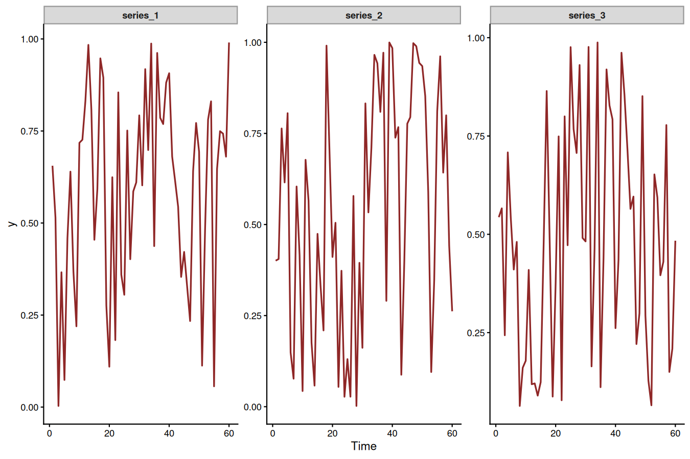
mod <- mvgam(
y ~ s(x, by = series, k = 6),
trend_formula = ~ AR(p = 1),
data = data$data_train,
newdata = data$data_test,
family = Beta(),
silent = 2
)Inspect the summary to see that the posterior now also contains estimates for the Beta precision parameters ϕ.
summary(mod)
#> Family: beta
#> Links: mu = logit; phi = log
#> Formula: y ~ s(x, by = series, k = 6)
#> Data: data$data_train (Number of observations: 180)
#> Series: 3
#> Trends: AR(1)
#> Draws: 4 chains, each with iter = 2000; warmup = 1000; thin = 1;
#> total post-warmup draws = 4000
#>
#> == Observation Model ==
#> Smoothing Spline Hyperparameters:
#> Estimate Est.Error l-95% CI u-95% CI Rhat Bulk_ESS
#> sds(sxseriesseries_1_1) 4.61 2.24 1.71 10.13 1.00 1167
#> sds(sxseriesseries_2_1) 6.07 2.58 2.74 12.62 1.00 962
#> sds(sxseriesseries_3_1) 9.01 3.74 3.81 18.35 1.00 1022
#> Tail_ESS
#> sds(sxseriesseries_1_1) 2117
#> sds(sxseriesseries_2_1) 1346
#> sds(sxseriesseries_3_1) 1462
#>
#> Regression Coefficients:
#> Estimate Est.Error l-95% CI u-95% CI Rhat Bulk_ESS Tail_ESS
#> Intercept 0.20 0.18 -0.12 0.57 1.00 881 1412
#> sx:seriesseries_1_1 9.64 7.00 -1.57 25.66 1.00 1220 1931
#> sx:seriesseries_2_1 14.25 5.53 4.08 25.95 1.01 698 1382
#> sx:seriesseries_3_1 22.79 6.63 9.41 35.42 1.00 1424 1841
#>
#> Further Distributional Parameters:
#> Estimate Est.Error l-95% CI u-95% CI Rhat Bulk_ESS Tail_ESS
#> phi 13.15 9.33 5.36 40.10 1.03 79 95
#>
#> == Trend Model ==
#> Trend Specific Parameters:
#> Estimate Est.Error l-95% CI u-95% CI Rhat Bulk_ESS Tail_ESS
#> sigma_trend[1] 0.81 0.23 0.35 1.25 1.03 113 281
#> sigma_trend[2] 0.89 0.23 0.49 1.39 1.02 126 153
#> sigma_trend[3] 0.51 0.21 0.09 0.95 1.03 99 149
#> ar1_trend[1] 0.54 0.20 0.14 0.90 1.01 405 717
#> ar1_trend[2] 0.69 0.12 0.43 0.91 1.01 311 912
#> ar1_trend[3] 0.55 0.25 -0.08 0.92 1.01 540 626
#>
#> Draws were sampled using sampling(NUTS). For each parameter, Bulk_ESS
#> and Tail_ESS are effective sample size measures, and Rhat is the potential
#> scale reduction factor on split chains (at convergence, Rhat = 1).
#>
#> Next steps:
#> - `pp_check(fit)`: posterior predictive checks
#> - `forecast(fit, newdata = ...)`: out-of-sample forecasts
#> - `lfo_cv(fit)`: leave-future-out model comparison
#> - `conditional_effects(fit)`: covariate effects
#> Use `how_to_cite(fit)` for a methods paragraph and `methods_md(fit)` for its equations.Plot the hindcast and forecast distributions for each series
library(patchwork)
fc <- forecast(mod)
wrap_plots(
plot(fc, series = 1),
plot(fc, series = 2),
plot(fc, series = 3),
ncol = 2
)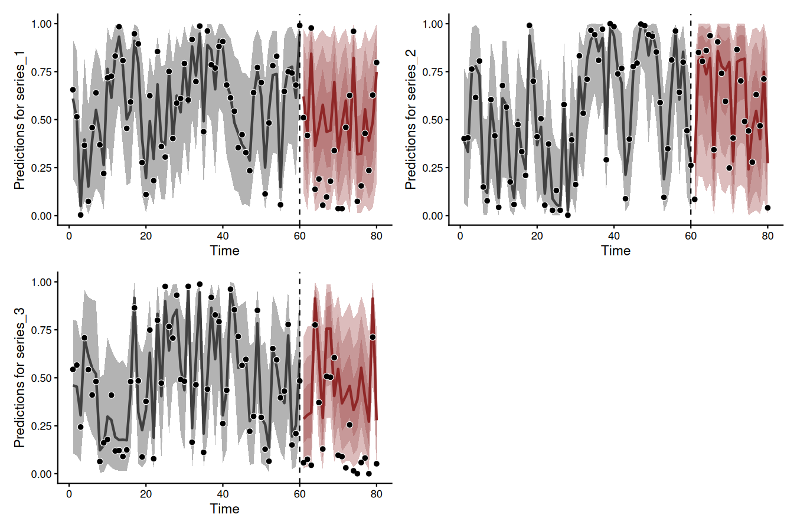
There are many more extended uses of mvgam, including the ability to fit hierarchical State-Space GAMs that include dynamic and spatially varying coefficient models, dynamic factors, Joint Species Distribution Models and much more. See the package documentation for more details. mvgam can also be used to generate all necessary data structures and modelling code necessary to fit DGAMs using Stan. This can be helpful if users wish to make changes to the model to better suit their own bespoke research / analysis goals. The Stan Discourse is a helpful place to troubleshoot.
Citing mvgam and related software
Research software is written and maintained by people whose only currency is citation. If mvgam contributed to an analysis, please cite it and the packages it depends on. A ⭐ on the repository is welcome too.
When using mvgam, please cite the following:
Clark, N.J. and Wells, K. (2023). Dynamic Generalized Additive Models (DGAMs) for forecasting discrete ecological time series. Methods in Ecology and Evolution. DOI: https://doi.org/10.1111/2041-210X.13974
As mvgam acts as an interface to Stan, please additionally cite:
Carpenter B., Gelman A., Hoffman M. D., Lee D., Goodrich B., Betancourt M., Brubaker M., Guo J., Li P., and Riddell A. (2017). Stan: A probabilistic programming language. Journal of Statistical Software. 76(1). DOI: https://doi.org/10.18637/jss.v076.i01
mvgam relies on several other R packages and, of course, on R itself. Use how_to_cite() to simplify the process of finding appropriate citations for your software setup.
Getting help
Bug reports belong on the issue tracker. A minimal reproducible example makes a report fixable. Questions about model syntax, priors or interpretation are better suited to the mvgam Discussion Board, where an earlier thread has often covered the same ground already. The Changelog records what changed in each release.
Other resources
A series of vignettes cover data formatting, forecasting and several extended case studies of DGAMs. A number of other examples, including some step-by-step introductory webinars, have also been compiled:
- Time series in R and Stan using the
mvgampackage - Ecological Forecasting with Dynamic Generalized Additive Models
- Distributed lags (and hierarchical distributed lags) using
mgcvandmvgam - State-Space Vector Autoregressions in
mvgam - Ecological Forecasting with Dynamic GAMs; a tutorial and detailed case study
- Incorporating time-varying seasonality in forecast models
Interested in contributing?
I’m actively seeking PhD students and other researchers to work in the areas of ecological forecasting, multivariate model evaluation and development of mvgam. Please reach out if you are interested (n.clark’at’uq.edu.au). Other contributions are also very welcome, but please see The Contributor Instructions for general guidelines. Note that by participating in this project you agree to abide by the terms of its Contributor Code of Conduct.